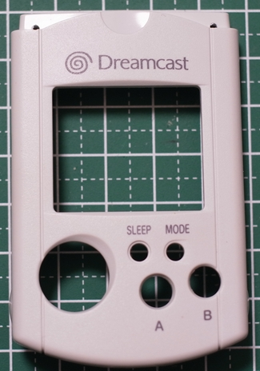
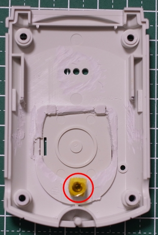
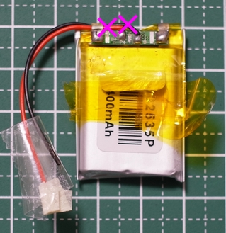

組立の前に
組立にあたってケースの加工や、はんだ付けが必要となります。怪我、火災などには十分注意してください。
内容物の確認
まずはキットの内容物を確認しましょう。
① 基板 x 1
② ディスプレイ x 1
③ スピーカー x 1
④ コネクタ x 2
⑤ ハーネス x 2
⑥ 両面テープ x 1
必要なもの
組立には上記の内容物の他に以下のものが必要になります
- Visual Memory
- Micro SD Card
- リチウムポリマーバッテリー
Visual Memoryは中古ショップもしくはフリマ、オークションなどで入手してください。
Micro SD Cardは32GBまで対応しております。
バッテリーは5mm厚までしか入りません。
502535と呼ばれているものを推奨しています。下記の店で購入可能です。
千石電商
スイッチサイエンス
モ
ノタロウ
稲電機
札幌貿易
工具について
必須
- はんだごて
- ニッパー
- リューター (ドリル刃が付けばドリルは不要)
- ドリル
あると便利なもの
- 超音波カッター
手順１ ビジュアルメモリの分解
まずはビジュアルメモリを用意しましょう。
裏側のケース裏蓋のネジを外します。
次に四つ角のネジを外します。
ケースが開くので、圧電ブザーを剥がします。
下側のケースが外れるので、基板のネジ2本を外します。
基板が外れるので、すべて分解します。
使う部品は、この写真のもののみです。他の部品は廃棄してもかまいません。
手順2 上側ケースの加工
赤丸で示した3か所の突起を削って平らにします。
上側の出っ張りを削り、左右のネジ台座を左右とも少し削って平らにします。
拡大すると以下のようになります。
左 右
削った後はこのような感じになります。
ここで干渉が無いか、画面を当てはめてみましょう。
隙間無くはまればOKです。入らない場合は入るまで削りましょう。
このまま左のコネクタにあたる部分を削ります。
コネクタの幅の下くらいにマジックで印を付けます。
赤枠の部分を印を付けたところまで削ります。
削る量はコネクタが当たらなければ良いので、下の写真程度で良いです。
左右の肩部分を1.5mm程度のドリルで穴を開けます。
ステータスLEDを見るための加工なので、クリアケースの場合は穴開け不要です。
正面から見るとこのような感じになります。

これで上側ケースの加工は終了です。
手順3 基板へコネクタの取り付け
スピーカとバッテリを直付けする場合は、この手順は不要です。
コネクタをシルクに合わせて差し込みます。
反対側からはんだ付けしますが、コネクタが落ちないよう、テープで仮止めします。

反対側からコネクタをはんだ付けします。
テープを剥がしてコネクタが真っ直ぐ付いているか確認して完了です。
手順4 画面の取り付け
両面テープを切断して、部品が無い部分3か所に貼り付けます。
貼る場所は画面の位置のシルクがありますので、この位置の内側に来るようにします。
両面テープの台紙を剥がします。
ここで画面の保護シートを剥がします。
上のタブは捻ればちぎれます。緑のタブが付いた保護シートはペリッと剥がしてください。
画面のコネクタを付けた後、シルクに合わせて貼り付けます。
コネクタはパチンと音がするまで押さえつけてください。
横から見るとこのようになります。
ケースに基板を取り付ける前に、まずは方向キーを入れておきます。
その上からラバーボタンと方向キー支柱を入れます。
その上から画面を下にして、基板をはめ込み、2か所ねじ止めをします。
注意！有機ELは脆いので無理な力を入れないでください。入らない場合はど
こか 干渉 してます。
USBを接続して電源を入れるとLEDが点灯し、画面が表示されればOKです。
手順5 下側ケースの加工
まずは下図の赤線を参考に、電池ボックスの出っ張り部分を切り取ります。
(超音波カッターがあると楽ですが、無ければドリルや、リュータを使って頑張って切り取ってください）
リポバッテリを入れるために、バッテリを置いて左右の枠にマジックで印を付けます。
左右の枠を削ってバッテリが入るようにします。
スピーカーを取り付けるため、赤い線で囲った部分を削って平らにします。
黄色い線で囲った部分を削って、厚みを減らします。（5mm厚のバッテリを入れるには削らないと入りません）
紫色の線で囲った部分の支柱の周りも削っておきます。（削らないと基板の部品が一部干渉します）
削るとこんな感じになります。
裏ぶたをねじ止めして、黄色で囲った部分を削って薄くします。（ここもバッテリと干渉します)
斜めから見るとこんな感じになります。
裏ぶたの支柱にテープを貼っておきます。（支柱が金属なので、短絡を避けるためです）

手順6 スピーカーの加工
元から付いているケーブルを根元で切断します。
コネクタ付きハーネスを赤丸で示した場所にはんだ付けします。

はんだ付け後は以下のようになります。
（写真を参考に予めハーネスを短くしてからはんだ付けしてください）

下側ケースの圧電ブザーが付いていた部分にスピーカーを貼り付けます。
（ハーネスは右側に来るようにしてください。反対にするとイヤホンジャックと干渉します）
ロットによってははんだ付けする部分に樹脂がかぶっている場合がありますので、そのような場合は以下のようにはんだ付けしやすい場所を選ん
でください 。
手順7 バッテリーの加工
まずはバッテリのポリイミドテープを剥がします。（再利用するのでやさしく剥がしてください）
元から付いているケーブルをニッパーで切断し、ケーブルを除去します。
注意！ケーブルは必ず片方ずつ切断すること。両方同時に切断すると短絡し、
火災 の原因になります。

半田ごてをあてて残りのケーブルを除去します。
短絡しないように注意
コネクタ付きハーネスをはんだ付けします。（ハーネスの長さは下記の図を参考に短くしてからはんだ付けし てください）
短絡しないように注意しながら一本ずつ作業してください
ポリイミドテープを元に戻して完成です。
手順8 最終組み立て
まずはバッテリーのハーネスを左側のコネクタに差し込みます。(右側はスピーカーのコネクタなので注意）
スピーカーのハーネスを右側のコネクタに差し込みます。

バッテリの位置やハーネスが干渉しないように注意しながら上下のケースを合わせて、4本のネジを元通りに締めます。
完成です